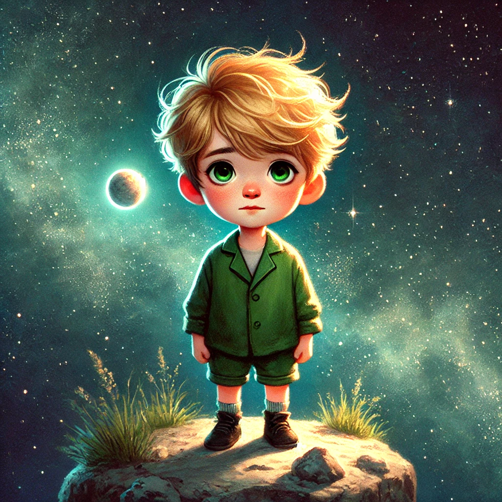

어린 왕자
목차
작가
앙투안 드 생텍쥐페리
출판일
1943.4.6
감상평에 대한 AI그림
"어린 왕자"는 순수한 시선으로 바라본 삶과 사랑, 그리고 인간관계의 소중함을 일깨워주는 작품이다. 어른들이 잊고 지낸 감정을 동화적 이야기 속에 녹여내어 깊은 울림을 준다. 특히, '중요한 것은 눈에 보이지 않는다'는 메시지는 마음속에 오래 남는다.

감상평에 대한 AI평가
철학적이고 감성적인 분위기 속에서 따뜻한 교훈과 잔잔한 감동을 전달하는 감상평입니다.
✨ nostalgia (향수) – 어린 왕자가 전달하는 순수함과 감성을 회상하는 느낌이 있어요.
✨ wonder (경이로움) – 세상을 바라보는 순수한 시선을 강조하며, 철학적인 메시지를 담고 있어요.
✨ warmth (따뜻함) – 인간관계와 사랑의 소중함을 이야기하면서 따뜻한 감정을 불러일으켜요.